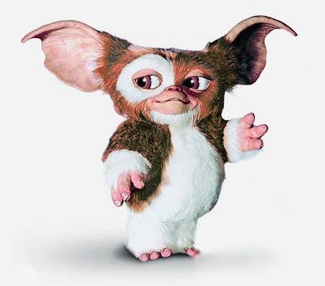
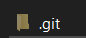
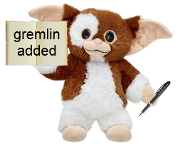

Welcome to the git gremlins guide to git.
The git gremlin is a very nice guy who
sits in your project when you use
git to help record and
manage your changes changes.
Here he has provided you with a
guide to help you make the best
use of his services!

When you initialise git
in your project, you will summon
the git gremlin who will start writing
down all your changes in his trusty
notebook.

But at this point you're probably
thinking to yourself
this is all
great, but how can I make
use of this?
Fear not! Because the git gremlin
has made this handy guide for you!
git init
Creates the .git folder Git gremlin is summoned and starts
writing down all of the changes
you make
git add
Adds a file to the files that
will be uploaded in the next commit
Git gremlin is told that a certain file
is a cool file and he should share it
with his friends in the future
git commit
Saves a copy of your project with
the changes made so far for later use Git gremlin saves the current notebook
he's been using in a safe box for later
use. PS. Only cool files allowed